The World According to Clinton’s Email
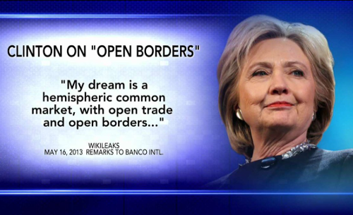Wikileaks has once again come up with some fantastic insights into how the elite run the world. Reading the different leaks from people associated with Hillary Clinton is fascinating. We are really getting a deep view into the globalist mindset.
The emails showing what Hillary was promising to her wall street donors are particularly enlightening.
If her actions and choices seem incomprehensible, you have understand that Clinton and her friends have a very different view of the world than us normal people. Especially those of us who hold to romantic ideas like God and country and loving your neighbours as yourself.
As always, click to enlarge the images.
Different crib

If you think that Hillary’s best known house, the house in Chappaqua, is pretty reserved and tasteful for the elite, it is, but you have to remember that this is not a ranch in the middle of the Texan desert, it is at the end of a private road in the suburbs of New York City. It is a mega-great house.

The house is surrounded by a large white wall, and a manned guardhouse stands by the entrance to the property. Yes, the anti-wall Clinton likes her own walls very much.
The red barn at the back is not for chickens, it is where her household staff and armed security are hidden away.
Meanwhile a small fleet of armoured vehicles provide suitable transport for any occasion.

Different services

In 2016 figures, the per capita disposable income of an American citizen is $39,190. Chelsea Clinton went to a school where tuition and fees cost $48,160 in 2016/2017. And yes, it has a massive green campus with a giant fence around it. The school campus makes Clinton’s house look like a hovel.
If Hillary doesn’t care about what provision is needed to handle mass immigration to inner cities, it is partly because she doesn’t need to use the overwhelmed schools or local services herself.
If Hillary seems a bit disrespectful towards the police, it is because she doesn’t need them, she has her own armed guards.
We can go on like this forever, so lets zoom out a bit.
Different Map
Almost every country has at least one thing to be proud of. As the British people, we are proud of our hard won freedoms and the communal institutions that our ancestors left us such as the NHS, our Royal Navy, our Royal family, our state school system, our ancient churches, castles, national parks and so on.
This means nothing to Hillary and their tribe, they are globalists because they are so rich they don’t want or need a nation state to look after them. From the first class cabin and the private jet, every country looks the same, the same hotel chains, the same exclusive shops, etc. The rich already live in a generic border free world.
If we draw a map of world according to Hillary’s email, it will look like this (map credit to Wikipedia, click on the map below to enlarge):
{kind=link}

How to run the world
The power structures of the globalist world view are really interesting but also quite basic. There are four levers they have to control the world. I will explain this using the above map.
- Trade policy
To Hillary and her ilk, California is the capital of the world, eventually drawing all of the Americas into a “greater California”.
By combining this Reino de Clintoñia with its two major colonies of Eurabia and Pacifica, we have a giant and generic service economy, ready to serve the elite’s every desire.
All the trade agreements like TTIP, TPP and the EU are there to make sure the servants do not become too uppity and to remove any barriers to the maximisation of profits for Goldman Sachs bankers and the others who fund Clinton and her friends.
- Patronage
As well as unifying the legal and trade systems, patronage is used to keep potentially dangerous alternate power structures such as intellectuals, religion and the media on board. Internal ‘markets’ and competition for grants keep the universities, NGOs and charities as useful idiots spreading the globalist gospel.
It is important to create pseudo-scientific pretences of why this globalist neo-feudal system benefits the population more generally, as opposed to more Occam’s razor like solutions such as lets take the rich’s wealth away and use it to cure cancer.
This is also why the current move towards cultural Marxism and identity politics suits the elite so well. David Cameron and the American democrat/republican one party state are happy to hand out gay marriage because it doesn’t cost them any money. Here have all the pronouns you want, just don’t ask for decent housing for the poor, infrastructure or services.
- Consumer goods and entertainment
2000 years ago, the Roman writer Juvenal coined the phrase ‘panem et circenses’ (bread and circuses) to explain how the elite kept the masses under control.
The classical theory of why the Roman empire fell includes the observation that through insecurity of trade routes and inflation, Rome stopped being able to provide affordable consumer goods to the people.
The global leaders today do not make the same mistake, they keep their servant class in check by exploiting the poor of the world. They keep Chinese goods cheap, and if the Chinese get sick of making plastic crap for the world, they keep plenty of other Asian countries poor as a backup, after that there is Africa, which is currently just used as a giant shop of minerals to be exploited.
[I have talked a lot lately in this blog about how Africa bears the brunt of the current system of world trade, so I don’t want to sound like a broken record, needless to say, every trade deal they make always includes massive tariffs against Sub-Saharan African countries.]
Meanwhile, we are in an entertainment golden age, no end of TV shows, films and sports are provided to keep the minds of the servants busy. While there is an attempt to reclaim costs to pay the cast and crew and so on, unauthorised distribution of media is rampant and tolerated as only thing worse than the people watching unauthorised TV is the people not watching it.
If the mainstream media is rejected by the people, then a major form of control is lost, thus the mad dash to control and censor the Web.
- Useful enemy
Whenever Clinton and other Western politicians get into trouble, Russia and a few other useful enemies are wheeled out as a useful excuse for pretty much anything.
There is a Goldilocks zone for useful enemies, not too big and not too small, Putin was getting too big for his boots so sanctions were used to make Russia’s GDP smaller than Australia, meanwhile Iran was on the verge of total collapse so Obama and Clinton recently removed its sanctions and bailed out the regime with billions of dollars.
Another way
We are finally at a level of technology where we can in our lifetimes, foresee a future free of disease, want or waste, where robots do the work and people are free.
After the Attack on Pearl Harbor, when FDR decided to pursue a war across two oceans, the US had no ability to fight a major foreign war on one front, let alone two. Yet he pulled everyone together, rich and poor, black and white, and together they got the job done.
Setting a national goal and putting the resources of the whole society into it can achieve massive things:
“I believe that this Nation should commit itself to achieving the goal, before this decade is out, of landing a man on the moon and returning him safely to earth.”
When JFK said the above quote, they had a general idea of the physical principles but no practical clue how to achieve it. We now know far more about cancer and other diseases than we knew about the moon in 1961.
I want a leader that says we will commit ourselves to curing cancer in ten years, to curing type 1 diabetes, to ending asthma in children.
I want a leader that says we are going to digitise our cars so that in five years time, the number of child deaths on the road is 0.
I want a leader that says we will build a house for every person who needs one, even if we have to take away a little land from wealthy estates.
What is not important
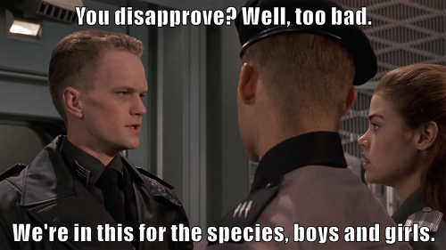{kind=link}
The whole reality TV side of things I don’t really care about. I don’t care if Jeremy Corbyn doesn’t wear a tie or Boris Johnson has made inappropriate jokes about foreign dictators. I don’t care if Labour MPs feel unhappy with Corbyn’s management style or Theresa May is alienating the 48% (which is now more like the 13% according to the latest polling but lets not get off track).
I do think it is somewhat odd that almost all of the Labour shadow cabinet come from London while almost all of the Tory Cabinet come from the home counties, but if they were the best people they could get, then I guess I don’t care.
I don’t care if Trump said something sexist 20 years ago, I don’t care if he makes his staff lose weight, I don’t care what he did when we was a billionaire playboy and a businessman.
I don’t care that the Clintons have a weird open marriage where, to use Hillary’s own terminology, she has to herd around Bill’s discarded ‘bimbos’. I don’t care how much Hillary swears in her emails. I don’t care she called her own party “a bucket of losers.” I don’t care if she coughs constantly for 8 years in a row.
I don’t care about temperament, I don’t care about who is the best manager. I don’t care who is the best husband or wife or mother or father.
I just want them to put these lilliputian tabloid issues aside and have some real policies to do something worthwhile for the actual voters.
Champions not tokens
The lives of the elite and the normal people are divided as never before. However, we don’t need leaders who feign the common touch. We don’t want token leaders, we want champions of the people.
Churchill was born into vast wealth, he was a drunk who gambled away the wealth of two great families and said many outrageous and sexist things, he would have probably been called deplorable and irredeemable by Hillary Clinton.
However, Churchill put all his privileged background and personal contacts into one aim, being the best military leader he could be.
When the time came that Britain was in the existential crisis of World War II, Churchill, being friends or related to much of the elite, knew exactly where their money was. The rich did not get off easy in cash terms and many of the Lordly estates were broken up. According to the national archives:
“a total of 14.5 million acres of land, 25 million square feet of industrial and storage premises and 113,350 holdings of non-industrial premises were requisitioned by the State.”
If we can raid the rich to defeat Hitler, can’t we raid them again to defeat cancer?
Stylish Super Skulk

The last time I talked about the web browser, I was technically speaking about Iceweasel. For the last decade, Linux users like me have known the default browser that Debian ships under the name of Iceweasel.
In 2006, due to some hysteria over trademark protection and typical West Coast America “we know better than you” attitude, Mozilla told Debian it could not use the name Firefox or the Firefox logo.
Can we even use it here? Well since we don’t want to be told off by Mozilla’s logo police, we can use images of some beautiful people who have made their own dramatic and artistic costume interpretations of the logo. This blog is 90% about cool and silly pictures after all.
After 10 years of Debian using the name Iceweasel and its own logo, eventually, Mozilla gave up and asked Debian to use the normal name and logo. Lets celebrate with another costume:

Thanks Iceweasel for your service, we will miss you. LWM published a longer discussion of this change. Incidentally, Google’s Browser is still called Chromium instead of Chrome on the Debian Linux platform. I could only find one Chrome costume:

He (or she) looks pretty happy.
Meanwhile, this week Firefox 48 has been released which, among other things, has caught up with a feature that Chromium has had for a while, namely multiple processes.
Making the browser render web content or play media in a subprocess is obviously a win for security and performance, especially on Liunx.
Processes are the main native form of efficient resource allocation on Linux, so now Firefox is using multiple processes it is finally working with the grain rather against it.
It is still early days. Nothing has crashed for me yet, but I am keeping the Firefox that Debian distributes (which at time of writing is version 45), around just in case. You might want to consider doing the same, especially if you are using extensions which may not work in the multiprocess mode yet.
To try it out, download Firefox. By the way in my last post about Firefox, I talked about how to run multiple Versions of Firefox and how to create an extra profile, which might be handy.
Firefox is pretty cautious about turning multiprocess mode on but putting about:status into the browser will tell you if it is on or off. As in the image below:

If you find it is off, you can make a new profile (as I just mentioned) or you can open about:config and toggle the setting called browser.tabs.remote.autostart to true. Then you can go back to about:status and see if it worked.
It still might be off because of whatever reason, i.e. they it might break an extension or whatever. If you want to push on anyway then you have to open about:config again and make a new boolean setting called browser.tabs.remote.force-enable and set that to true. Find more instructions here.
So well done to all the Mozilla developers and volunteers who wrote and shipped that. Just for you, another of those great Firefox costumes:

Time to put away the student politics

Those who resort to violence, always lose their claim
After the 18th and 19th centuries, there were many competing territorial claims over former Prussia; Germany had some valid and some not so valid claims, as did other countries. Going to war (twice) over the claims was not valid however.
It is a long standing and basic principle of world order that the belligerent aggressor loses whatever claims they had. Now of course Germany is a peaceful and wonderful country and also makes no claim to any of these areas.

Whatever the right or wrongs of the Falklands issue were before 1982, once Argentina invaded and spilt British blood, they lost any claim to the islands; it is just how it goes.

It is also an issue of basic democracy that as recently as 2013, the Falkland Islanders had a referendum with a turnout of 91.94%, where 99.8% voted not to change the Islands’ status in anyway. The results of referendums must be respected, especially with such a high turnout.

There is also the practical matter that saying anything different will be a sure loser in British election.
Likewise, the question of whether making the state of Israel was the correct response to the evil of the holocaust, became a non-issue after 1967. Israel did not start the war, the Arabs did, but the Israelis won the war and the issue was settled.
Any claims the Arabs had over the land was lost then. You don’t get to claim territory through starting wars, you must only lose by starting wars.
Time to boycott calling for boycotts
Even if you disagree with Israel’s policies, collective punishment against its citizens can have no practical effect on those policies.

Dis-inviting an innocent academic from a conference, will not change policy. A professor of Artificial Intelligence or Manuscript Studies (made up examples for the sake of argument) does not set Israeli security or foreign policy.
If a UK institution chose an Israeli company to provide a product, it did so based on price and quality. Pressuring an institution to boycott the Israeli company will just make innocent workers there poorer and will mean the UK institution will get a higher priced and/or lower quality good. An orange juice producer or a software company does not set Israeli security or foreign policy.
The same principle applies to exports. Pressuring a UK company to not sell products to Israel, tractors for example, will not change a single Israeli policy. It will just mean they buy a tractor from someone else and workers in the UK have less jobs making tractors.

Discretion is the better part of valour
The sad truth is that there is nothing the UK can usefully do to make peace in the middle east. Tony Blair of all people tried to be a peace envoy and yet there is still no peace.
Any politicians that want to pander to either Muslim or Jewish voters by taking a side are just being dishonest with the voters. The UK just has no leverage on either side. The Middle East is just not a part of the world that cares what Britain thinks one way or the other.
Our winning strategy as a country is not to pick sides and just be a friend to everyone, and of course, sell them all our goods and services.
By the way, America has far more clout, expertise and money and still has not made much progress either but that is another story.
Yes there are poor and suffering people in the Middle East, but there are poor and suffering people everywhere so we should focus on areas where we are wanted and we can have a meaningful impact, such as African free trade and development which we have ignored for too long.
It is not our fight
So it total baffles me why Palestinian liberation or Latin American politics are cause celebres on the UK left. There are no votes to be won here.
We talked before about the difference between few hundred thousand people in the UK who have strong political views and the millions who just want cake.
The average British voter does not care a monkeys about Palestine or improving Anglo-Argentinean relations and just wants to hear domestic policies.
It seems like Jeremy Corbyn is wise enough to know that there is a difference in being a backbench MP who can obsess about these obscure issues and a potential Prime Minister who needs to have total clarity and focus to cut through a hostile media. I hope so anyway.

Let them eat cake

On the 23rd June 2016, the people of Great Britain and Northern Ireland were asked whether they wanted to leave or remain in the European Union. 52% voted to leave while 48% voted to remain.
On April 10th 2016, ten weeks before the vote, ICM published an opinion poll that gave a four-point lead for Leave (52% vs 48%), which turned out to be the correct result.
One explanation is that with several pollsters covering the referendum, one has to be right; after all, even a stopped clock is correct twice a day.
However, lets consider an alternative explanation, that the whole EU referendum campaign made absolutely no difference to public opinion at all.
Hundreds of millions of pounds spent by the campaigns, posters, Boris’ bus slogan, acres of newspaper columns, billions and trillions of tweets, all of it, didn’t manage to convince anyone of anything.
People are just not that into politics.
In other words, the day to day minutiae of events doesn’t really matter to the silent majority, they haven’t got the time or the inclination to care and why should they? It would be very conceited to say the people should look up and spend their time listening to their Lords and masters.
The print circulation of Britain’s main broadsheet newspapers has fallen so far they can barely scrape a million per day combined. What percentage of their remaining readers do more than browse the news before going straight to the crossword or the sport section?
Meanwhile, less than 200,000 people in the UK watch the BBC’s political programmes, but over 15 million people watch ‘The Great British Bake Off’ on the same network, which is a cake baking competition.
As I said on Twitter: Politics is important. However, cakes are 75 times more important.
In fact, I don’t want to ever live in a country where politics is more important than cake, it doesn’t sound like a very benevolent regime.

Hope Wins over Fear

In the midst of a larger post about the results of the EU referendum, I talked about the echo chamber in the campaign. I want to explore that a tiny bit more.
You also may remember that in a post before the referendum, I talked about myself as an undergraduate and how I was very passionately pro-EU but over time, the doubts set in, especially after the crash in 2008 and the EU’s harsh measures metered out to Greece.
As I started 2016, the doubts and problems with the EU had not yet pushed me into the idea that the UK should ever leave the EU; I started 2016 as a reluctant but firm ‘remanian’.
However, I wanted to make the decision based on all the information and up to date arguments. I turned to other people, both on Twitter and in the real world.
I soon ran into a problem, even discussing my own doubts was beyond the pale with anyone pro-EU, you must support the EU because that is what you do.
On Twitter it was worse, loudly unfollowed by 20-30 people, regularly blocked in the middle of a seemingly civil discussion over a technical EU matter.

I was shocked the first time, saddened the second time, third time it was water off a duck’s back, I stopped noticing or caring when someone threw their toys out of the pram.
I did try to carrying on to discuss with any remainian who wanted to, in the hope they would come up with the magic argument that would put me squarely back in the remain camp. It soon became apparent that everyone else has the same doubts and concerns.
Unlike ten years ago where you could easily encounter British Europhiles who wanted to join the Euro and the Schengen Area and so on, now ardent Europhiles seem a bit thin on the ground.
I met no-one that had a positive view of the EU as a force that will make things better, it was just what you did about the faults, whether you just lived with them in a fatalistic fashion or tried to face up to them by leaving (and potentially making a lot of new issues/opportunities).
A lot of the remain argument was that uneducated and poor people want to leave, so don’t be in that group since they are all racists and bigots. Well I was brought up in very modest circumstances indeed and these are my people and I don’t recognise that description.
Meanwhile, the leavers were just more fun and upbeat people. They were happy to listen, discuss and gently point out their views.
I guess the morals of the story are that if you want to campaign for something, have the most hopeful message. Even if you are against something, have the best plan for fixing or replacing or leaving it behind. Blocking people doesn’t win votes in real elections.
Above all, the moral is Twitter is probably a crap place for discussing politics.
Good fences make good neighbours
The EEC was not very popular when the government took the UK into it in 1973 and so the government was forced by the voters to have its first leaving referendum only two years later in 1975.

The government and all of the media threw the kitchen sink at remain in and succeeded, but on practical grounds alone, it never even tried to sell the vision of an ever closer union to the people of Britain, and if it had, it would have been rejected.
While governments managed to resist another referendum for the next four decades, the practical nature of the remain argument meant there was no mandate for further integration, indeed the remain argument was won precisely on the basis that Britain would not be pulled in any deeper.
So as the EU project developed in different directions, Europe was not something Britain did, Europe was something done to it; something that had to resisted or opted-out of: Schengen Area, the Eurozone and countless other programmes.
The 2016 EU referendum was the the last moment in history that a pro-EU case could be credibly made but again the establishment decided not to make it. It again decided to focus on the perceived practical shortcomings of an independent UK.
In other countries, there are some people who genuinely believe in a United States of Europe. However, we in the UK never had that tradition, so those arguing for remain are those who benefit most from the patronage that results from laundering our own taxes to and from Brussels give.
Brussels is awash with lobbyists for non-European interests and yesterdays winners struggling with technological change, wanting to game the regulations against new interests.
Remain was a coalition between decent people wanting to keep the status quo but also all these aforementioned parasites and spivs who know they could not justify a policy or an item of government spending to the British electorate so abuse the (still not very democratic) EU to sidestep democracy to push their own special interests and regulations.
I said before the referendum that the rationale for entering the EU in 1973 was marginal at best and I concluded the forces moving the UK away from it were increasing.
The neo-liberal/Thacherite consensus of the last 30 years cracked fatally in the 2008 crash, since then it has been on life support as near infinite supplies of money are printed and dished out to the banks, but brain activity has not returned to the patient. The EU referendum is the British people starting to turn the machine off.
To put it another way, as I said on Twitter, it was Chekhov’s referendum. David Cameron put a gun on stage and the people shot him with it.
After the vote, I talked about the call for the second referendum and why it will not work, Brexit has just sped up the inevitable changes.
Anyway Britain is leaving the EU. If you voted for remain, not only will be much happier if you just accept it and move on with your life, you will be more successful. Escaping to a fantasyland where the vote did not happen will mean you miss the opportunities of the future.
This applies to organisations and sections of the economy too, after all no one is owed a living.
Those that work in harmony with the new independent era will thrive, those that mope around re-fighting yesterday’s narrative will be seen as irrelevant in the post-Brexit era and thus will lose funding accordingly.
The leave supporting public has been gracious in victory, trying to bring everyone on board. However, the good mood will not last long if institutions are seen to be working against the UK. David Cameron and George Osborne doubled-down on Remain and their position was untenable in the new era. Those that don’t learn the lesson might suffer the same fate.

I think in the long term, Brexit will be a benefit to all of Europe, Britain has gone from being an unhappy tenant of the EU to Europe’s most supportive neighbour and ally.
If you are a European, we the British people, voted to take by control and run our country from Westminster and our city councils and regional parliaments in the UK. However, we still love you as people and we love your countries. We can still kiss you from over the fence.
Order of Magnitude
The leave side had Boris’s battle bus which had the slogan “We send the EU £350 million a week, let’s fund our NHS instead.”
While it is technically true that the cost of the UK’s soon to be ended EU membership is £350 million per week, we got a rebate (i.e. a discount) of £100 million so we only sent £250 million per week. While it is not stated in the slogan how much exactly extra money could be available for our NHS, it cannot be £350 million per week, since only £250 million per week ever existed (to the extent that money exists).
For me, the question of whether to be in the EU or not was never about money but the slogan would have worked as well with whatever the correct fact-checked figure is.
However, if it was meant to be a trap, it worked. The remain side had far more money and far more establishment figures, and when it constantly sent those figures out to say that the real number is really £250 million per week and some of this is spent on useful things here in the UK etc, it is made leave’s case for it.
For £250 million a week is still a massive number and the same order of magnitude, by focusing on the detail, Remain left the overall premise unchallenged.
Having your opponents make a point for you, frees up your own resources and own airtime for other points.
Not that it matters, as no one was listening. People voted for their own reasons not because of anything Boris said.
This is my design

This is a sequel to the last post about Britain’s relationship with the EU. That ended with the conclusion that “However, we will leave in the end, it is just a matter of time, and we will not be the only ones.”
Little did I know that the people of Britain were already there ahead of me. When the BBC’s coverage started under Britain’s leading presenter, the great David Dimbleby. It seemed that the Remain side was going to cruise home.
I thought, okay a noble fight, we made a point, but the forces of multi-national capitalism were overwhelming. So I went to bed. After all the two campaigns were not equal.
A lop sided campaign

The Remain side had all the forces of multi-national neo-liberal capitalism, the banks, the European Commission as well as implicit support from the supposedly independent Bank of England who popped up occasionally with helpful statistics and reports.
A lot of people do their duty as citizens and vote, but are not really interested in politics. They have enough on their plate with work and family etc. These people were always likely to do what they were told by the political leaders and also are biased towards the status quo.
The British government spent £9 million on posting a Remain booklet to every house in the UK, a benefit that the Leave side did not get. We also had the Prime Minister and the leadership of the other mainstream parties like Labour, SNP and Greens supporting Remain.
The support of the Labour leader Jeremy Corbyn was particularly difficult as the traditional left wing position in Britain is to be against the EU. The 1975 referendum, the No campaign was led by the main Labour figures of the day Michael Foot, Tony Benn and Barbara Castle.

Jeremy Corbyn was a well known eurosceptic but as the leader of the Labour party, whose MPs were mostly elected during the Blair years and thus are mostly right wing, he was in a bit of a difficult situation. So he did his duty as party leader and represented the party line, appearing at events all across the country for Remain.
He did however refuse to make any out and out lies, and so when cornered with a particularly forensic question, the truthful answer was not always the most politically helpful answer for the Remain side.

The mainstream media were very pro-remain at first, especially the publicly owned TV stations like the BBC and Channel 4, but the newspapers started to drift away, even the Guardian started featuring a few pro-leave articles in the last week or so of the campaign.
Moving from one newspaper to another is a matter of moving your hands a few centimetres, so British newspapers do tend to reflect the views of their readers to a certain extent, despite the owners tending to be pro-Remain.
How to get someone out of bed
However, after a few hours of occasionally checking my phone in a sleepy haze. Something was happening. Was I dreaming it?
Area after area went for Leave. London and its little spider legs of wealth around London were going for Remain, as was Scotland, but the rest of England and Wales mostly voted for Leave.
I decided to get back out of bed, go back downstairs and wait for the Birmingham result.
Birmingham is for leave
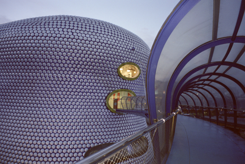Britain’s second largest city, Birmingham is not some twee ancient town like the nearby Anglo-Saxon capital of Tamworth (see last post). Birmingham is a child of the industrial revolution and the Empire (also see last post) with the major expansion of the city in the 1800s and early 1900s. Birmingham is a beautiful city, as long as you like Brutalist and Modern architecture.
Birmingham is somewhere between 45% and 50% “White British” (this weird term is the designation the government uses), it isn’t the most diverse city, which is Leicester and some the cities of the North but it is the one I live in and know best.
The different races of Birmingham mostly get on very well, the city’s signature dish is the Balti and the civic institutions put on events that reflect the city’s diverse cultural backgrounds but are open to all.
It is a Labour city. The right wing parties barely make a foothold, there is no UKIP presence to speak of. There are 9 Labour MPs and just one Tory MP in the outer suburb town of Sutton Coldfield, which doesn’t even consider itself part of Birmingham.
Birmingham with its 700,000 registered voters in the main city area, was expected to be a big remain landslide. When the result came it was 50.1% for Leave.
When you go through the posher areas of Birmingham, there were loads of Remain posters on many of the large expensive houses, so it is not mathematically possible or likely that all the votes to Leave were from “White British”. So the Black and Asian voters of Birmingham were split in the same way as the white voters, or at least enough to put Leave over the top.
The question that Remain will never answer

I focused last post on the successful non-EU immigration that the UK has had, and a good proportion of them seem to have gone for Leave, as I thought they would. One of the questions I posed in my last post can be summed up as follows:
Why should a Bulgarian be able to bring their family to the UK and trade freely, but an immigrant from India cannot?
Despite being posed many times by Leave, this question was never answered by the Remain side. Therefore, the Black and Asian vote split and the Leave side benefited from a million or two more votes nationally, which is of course a winning difference.
Why didn’t Remain field an answer? For four reasons I think.
Little Europeans
Firstly, is the ‘little Europeans’ issue I talked about in the last post, the culture of the EU is about middle class White-European people flying about between cities on expenses. Britain has a Commonwealth history making us look at the world, a lot of Europe does not.
Those Britons most in support of Europe tend to have this identity also. The idea that people from outside the EU such as Africans or Indians are equal to Europeans, and therefore the system should reflect that, just doesn’t occur to them while hidden inside the walls of fortress Europe. We might as well be talking Klingon for all the good it does. There is just not the mental framework there to get it.
Remain also just assumed that all non-“White British” were theirs by right and they did not have to work for it. The idea that Asian or Black voters would have independent ideas and issues that should be considered did not seem to be considered by Remain.
Secondly, the Remain side I think made a tactical decision not to answer the question. They thought saying something like immigration is good, we should open our borders to the Commonwealth too, but we are not going to control EU migration at all to compensate, would push more people to the Leave side.
Top down Remain, bottom up Leave

Thirdly, because the Remain side inherited the infrastructure of the Labour and Tory parties, they followed a lot of top-down practices that made sense in a constituency first-past the post based system. So they sought to get a simple majority in each area, rather than focusing on total number of votes. They assumed that most Midland and Northern cities as well as Wales, would overall go for Remain so didn’t put any real effort into those areas.
Meanwhile the Leave campaign, short of financial resources, had to run a grass roots, bottom up campaign. They found out the questions putting people off Leave and had to come up with some kind of answer to the questions.
Meanwhile, several Unions like the RMT, ASLEF and BFAWU; left-wing anti-establishment figures like George Galloway and Julian Assange, as well as the socialist worker and many others, were rallying the non-mainstream media, blogs, and social networks to the Leave side.
How to brainwash yourself

The forth reason is connected to the last part, and the most important issue and this is a wider reason to why Remain lost. They believed their own propaganda, they brainwashed themselves. Believing that there were no valid reasons want Leave apart from to control immigration, they didn’t field any answers to the questions being raised.
Remain just focused on two messages:
Project Fear - leaving the EU would be the end of the world. The Chancellor George Osborne, previously featured on this blog, the one that likes to take money from disabled people and give it as tax breaks to billionaires; he made a much lampooned threat of an emergency budget requiring massive tax rises and spending cuts.
Meanwhile there was the even more preposterous argument that the UK leaving the EU would be the end of peace in Europe. I don’t even know what this means. Are Germany going to restart the blitz and rain down bombs on our heads? Is the UK going to gather an army of longbowmen and retake Agincourt? What a lot of utter nonsense.
Project Sneer - anyone who is for leaving the EU is a racist Nazi who wants to round up immigrants and throw them into the sea. Equally stupid. We will talk about this again shortly.
While immigration was an issue of course, the Leave campaign also focused on many issues that were not immigration including:
- TTIP which does actually include healthcare and results in the break up of the NHS and private health insurance from American companies
- The issue of little-Europeanism/racism we just talked about
- The fortress Europe that makes it difficult to trade with non-EU countries which are the growing part of the world.
- The lack of democracy in the European institutions. Only the Commission can introduce laws and repeal laws. The elected European Parliament can just discuss them. It has about us much power as the fantastic UK youth parliament where school children go into the house of parliament and discuss laws.
- The focus on complex regulations instead of Common Law
- The economic and social punishment given by the EU to Greece (see last post)
- Unemployment levels on the Continent.
- You could go on and on.
- The way the EU’s Thatcherite policies help distort the allocation of resources towards London and the Financial sector and away from manufacturing and wider England.
Birmingham is a traditional capital of manufacturing, and still has the productive capacity hanging on for when Britain starts depending on making and selling things, rather than relying on financial scams for its national income.
I wonder if this had a lot to do with why Wales voted Leave. The EU is keen to spend our money on museums, University buildings, and so on. But anything that might give areas like Birmingham or Wales a competitive manufacturing advantage is not allowed. Just look what happened recently to the Port Talbot Steelworks, EU regulations stopped the government from acting to save this vital national resource from Chinese steel dumping; steel is the foundation of national defence after all.
Echo chamber
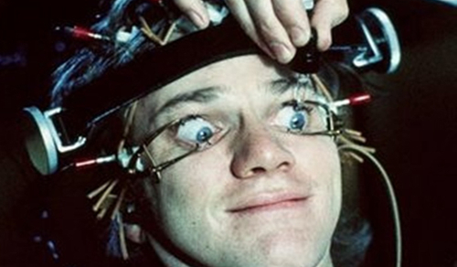The Remain side acted like an echo chamber. Its core message of sneering at everyone that is not an EU-supporting cultural liberal from Cambridge or London cost it dearly. The remain side followed its own supporters on social networks, it did not engage with the non-mainstream media of right or left, it did not go out and listen to people’s reasons for Leave and provide an appropriate response.
Therefore they lost.
Ignoring the merits of the argument for a moment, the Remain campaign, despite every possible advantage, managed to misstep at every possible moment. From Osborne’s terror budget to trying to make political capital out of the tragic death of an MP, there was not much self-awareness.
Piling on the war monger Tony Blair and everyone responsible for the 2008 crash did not improve their credibility.
Consumers in denial
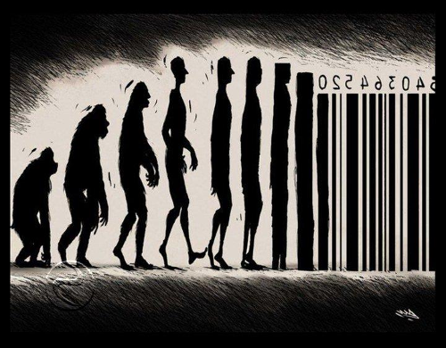When the result came, many tears were cried and much gnashing of teeth by Remain supporters.
Several days on, the vestiges of Remain support are still in full on denial. By not listening to voters in England and Wales outside London and its small tentacles into the home counties and the University cities of Oxford and Cambridge, they were totally dumbfounded that the country voted against them.
Democracy is not about ordering a policy like a pair of shoes from Amazon. You have to listen, you have to engage, you have to convince people that are not like yourself, you have to build a coalition of support.
Mocking people and blocking people on Twitter does not constitute productive debate. Calling people racists or stupid does not move them into your camp.
Second Referendum

The biggest joke of all is the idea of a second referendum. The people who did not and will not listen want to have another vote and keep having them until they get the result they want.
The Leave side had to wait over 40 years for a referendum. The Remain side want one tomorrow.
This will not work.
Firstly, this referendum was extremely expensive in staff costs, venue costs and lost productivity as schools and other public buildings are closed. All elections are expensive and take a long time to organise. Being based on the popular vote, it is a bit more complicated than the normal constituency system that we are geared up for. Normally there are lots of safe seats that never change and have massive winning margins that don’t really require much precision or huge amounts of staff.
Secondly, a lot of advantages the remain side had will no longer exist:
- David Cameron quit and there will be no pro-remain Prime Minister again leading the charge and offering potential promotions and knighthoods etc for those on his/her side.
- Everyone is knackered. Labour and the Unions spent all their campaign budgets and desperately need to save cash, energy and volunteers for the next set of local elections and a possible snap general election. Campaigners from other institutions like NGOs and companies need to go back to their real jobs.
- Project Fear is over, the British public already voted out and are no longer scared. Those who felt they had to ignore their heart will not need to do so again.
- Project Sneer is ineffective because anyone previously scared of talking about being out for fear of being seen as a racist or UKIP supporter, has nothing to fear as they are with the majority 52% and rising.
- Any new referendum will be from the outside. The status quo will be for remain out. The only people still for out will be a coalition of cultural liberals and dodgy bankers.
- The EU has had enough of us. When they say Britain is toxic and causes contagion, it means that other countries want the special deals we have had like vetos, partial rebate, no Schengen, no Euro. They think the sooner we nasty Island hobbits are at arms length, the longer they can keep the EU from collapsing. They are deluded of course, but that is a discussion for another post.
- Events - lots of nasty crap is coming down the pipe for Europe, it will look more unattractive as time goes on. Also other countries may leave.
- Demographics - Non-EU migrants have the highest birth rate. So as the years go on, ignoring the world outside and the issues we talked about above becomes more untenable.
- No More Patronage - the UK will now need its own systems for funding Universities, research, regional development, farming, etc. People will adapt to them and will no longer feel tied to Europe by an umbilical cord of funding.
- Progressive policies - the UK will increasingly find solutions that are not legal or tenable in the EU. Rail nationalisation, student scholarships, NHS re-nationalisation and so on. Once setup, they will act us as a permanent lock keeping us out of the EU.
If we run the referendum again, it will just be embarrassing. Leave will get 70%, or maybe much more, if we are already out then 80% or 90% I can totally believe. We need to save our fellow citizens from self-harm and mental anguish and just say no to that.
This is my design

I don’t deny that Leave vote had white bigots, but it also had socialists (like me) and a good amount of BME population outside London.
In any case, the past is the past, we are on the way out.
The far right bigots will get a shock when it finds that the independent UK actually increases immigration as it booms free of the EU. This time our immigration policy can be race and nationality blind, allowing the whole world to come here on an equal basis, especially the Commonwealth countries who sent 4 million of their citizens to fight and die alongside us in World War II and whom we have treated terribly since.
I love Europe, I just don’t like the centralised Roman Empire style state (see last post). I want the UK to engage with the EU countries on a bi-lateral basis, and on the level of people and companies, as a real union of peoples, not a neoliberal cage where everything has to go via a centralised Brussels bureaucracy. I also want the UK to lift its eyes and interact with the wider world.
This is our chance to do things differently. As we replace EU run areas with local ones, we can upgrade them with modern values and technology.
Our farming and fishing policies can have the greatest environmental standards in the world. We can finally ban battery chickens and give incentives for Organic food. We can stop the nonsense of paying people not to produce food and instead pay them to upgrade their animal welfare and environmental standards.
Our research policy can focus on devolving funding to the Universities themselves, trusting them to invest in long term research projects. Get the professors back in the lab and the lecturers back in the classroom, rather than making them spend all their time bidding for short-term grants.
We can return to making and not depend on the financial scams for our national income.
We can increase the minimum wage to a real living wage and thus encourage the use of automation, machines and robots (see end of last post).
The excuse in the past was that if we could not give our young people full scholarships to University, because it would be untenable to offer them to the whole EU. Now there is no excuse, we should give all young people a scholarship so they begin their careers with skills and knowledge not debt.
Boris’ Britain
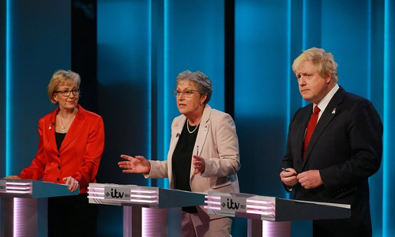Birmingham’s own Giesla Stewart was the voice of reason in this campaign and the official leader of the Leave campaign. Giesla had a good campaign and did very well. However, the mainstream media only wanted to show Boris.
I must admit Boris also had a good campaign. He didn’t make any gaffs and he looked like a leader, he stood up and took the incoming flack from Remain and effortlessly outflanked his Tory opponents by pivoting to the left when required. He seemed very comfortable and statesmanlike sharing cross-party platforms with Labour Leave figures such as Gielsa, Kate Hoey and others.
Meanwhile David Cameron refused to debate his opponents and looked like he was afraid. The remain side didn’t manage to combine the two campaigns very well.
Boris is going to win the Tory leadership, it will probably seem like a coronation, then he will try to bounce a snap election and get a strong mandate and he may win.
The left need to stop moping over the UK’s European exit and unite or Boris will get a landslide.
We can make the progressive case and win the next election. We can stop Boris’s Britain and make Britain a progressive country once again.
Rome Vs The Matrix
I would like to tell you a story. This is a story of how we the British people, and we the planet, got here and more importantly where we should go next. It is still a work in progress. If you are of a like mind, please help me to improve it. [1]
Dogglerland
After the last Ice Age, Britain was certainly a part of Europe, the Thames and the Rhine met and Woolly Mammoths and later people walked across to Britain.
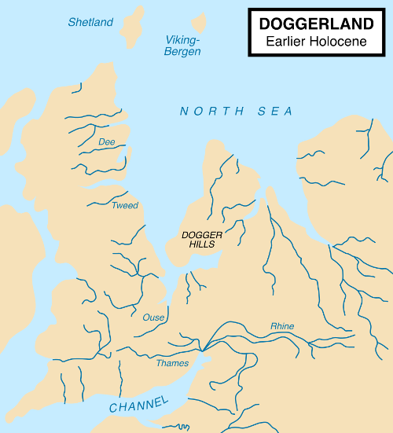However, God decided out of wisdom or for a joke, that Britain should be an island and smashed the land bridge with the Hammer of the Waters [2].
Of course, throughout history, idealists have been trying to glue Britain back onto Europe, without much success.
However, this unavoidable geological and geographical fact remained and still remains, and it gave us a very different history to the continental peoples of Europe. I think it also gives us a very different future.
Rome DOS

Julius Caesar’s made expeditions to ancient Britain in 55 and 54 BC, it was the beginning of a pattern. The Romans could enter Britain and conqueror territory, but they could not hold it.
Whether is was Boudica, the Iceni queen who burned down the Roman settlements at modern day Colchester, London and St Albans; the inability to make progress in the North, modern day Scotland, Wales or Cornwall; or countless other defeats; the Romans never achieved a stable position in Britain.
Roman Britain existed within its urban colonies but despite a massive investment in infrastructure, such as the famous road network, conquering Britain was never a serious enough priority to divert the required military forces to subdue the people of Britain once and for all.
Roman officials and retired veteran troops settled in Britain had a tendency to go native and side with the locals over Rome, not least for survival, intermarriage with local tribes brought more security than the Roman state, which was more annoyed than responsive when the frequent requests for rescue came. After a few hundred years of half-hearted efforts of colonisation, Rome stopped answering altogether.
Charlemagne and Rome 3.11
However, in Europe, despite the collapse of the Romans, the Byzantine and Frankish Kings were trying to recreate and hold the Roman Empire, Charlemagne being the most famous, he conquered a good part most of Western Europe.

For those on the continent, they have a 2000 year process of recreating the Roman Empire. However, we were barely in it to start with, and haven’t joined since.
While Charlemagne was winning battle after battle, back in Britain, something very different was happening. As the Romans had faded out, the Saxons faded in, it wasn’t very long before the Mercian Supremacy united England under the Saxon Kings and their capital of Tamworth.
Normandy
William I, also known as William the Conqueror, the first king on the back of the space-limited 1 foot rulers traditionally given to British schoolchildren, was cousin and in his own mind at least, heir, to the previous king Edward the Confessor.
With the arrow through King Harold’s eye, the Anglo-Saxon era of Britain had ended and the Norman age had begun.
Despite Northern France being their ancestral homeland, the Norman Kings and their Tudor descendents failed to hold together England and France, losing Normandy and the rest of their homelands to the Franks.
They had more luck in the westerly direction, conquering the various little kingdoms in Ireland by war and marriage, while Henry VIII managed to create a peaceful union with Wales. However, all attempts to secure a legal heir either by legitimising his son Henry FitzRoy or divorcing required permission from the Pope.
English Independence from Rome 95

The Pope had bigger problems than pleasing the English (and Welsh and Irish) King, Emperor Charles V was once again building a united Europe. Grumbles about papal rule and (in practice) subservience to the Holy Roman Empire had been bubbling for many years in parliament over a range of issues, but the international marriages of the King had always meant the monarchy was a limit to how far parliament could act.
Now with the King on the side, the Acts of Supremacy was could be passed, meaning the King and the secular parliament would now rule the Kingdom, the role of the Church was confined to moral matters alone, and England was no longer seen as a minor partner or dependency of the Holy Roman Empire.
This also enabled union with protestant Scotland, and James VI of Scotland became James I of England. Despite the movie of the evil English killing poor blue painted Mel Gibson and the moans of today’s Scottish nationalists, it was actually the Scottish that (peacefully) conquered England.
The United Kingdom was now a confident and powerful country. Freedom of thought led to the industrial revolution, which we will come back to later.
Catholic Europe and its supporters did not take this lying down, England was still a valuable prize to add to a European empire. The Spanish Armada was the most famous failed attempt at an invasion, and the Gunpowder Plot tried to blow up parliament with James I inside.
Two last attempts at UK-European integration
A more consensual(ish) attempt of European integration was when parliament invited William of Orange to become the King William III and so he did. For a brief period it seemed like the United Kingdom and the Netherlands would become one country. However, William was childless when he fell of his horse and died, and each Kingdom had different rules over the succession, and that was that.
Next in line was his sister in law, Queen Anne, the last truly English monarch. Under her rule there was a major humanitarian crisis on the continent. King Louis of France decided to commit genocide against the Huguenot people and wipe them out in a series of massacres, half a million left France in a giant exodus.
Queen Anne opened Britain’s borders and 50,000 Huguenots moved here. Queen Anne’s new immigration policy was simple, anyone who turned up and pledged allegiance to the Queen was immediately part of the British population.
The open border policy lasted for hundreds of years. The barriers were only put up fully in the late 20th Century, when we were already in the European Union.
Anyway, like William, Queen Anne also died childless. What happened next is quite interesting. Parliament chose the next King from a list of potentially suitable Princes and Princesses. They settled on George of Hanover, the 58th in line to the throne and non-English speaking.
We were now in a union with a mid-level German principality, but like all our other European alliances, it broke down and it eventually the Kingdom of Hanover became part of the German Empire.
Britain in the World
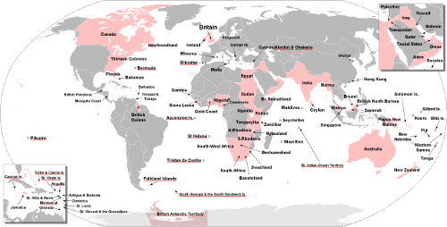By now Britain had lost interest in European affairs, we were part of a global Empire on which the sun never set. Lots of terrible evil things happened, which everyone talks about but also some good things, which people don’t talk so much about.
On a purely economic level, the Empire was a giant mistake. What started as an attempt to get a set of sustainable safe ports ended up covering a quarter of the world. It was the industrial firms of the UK that had to subsidise the infrastructure of Empire building, and as other countries got their industrial revolution, the sums no longer added up.
If we had just defended these ports, and given countries their independence quicker, would they have been more free? Or would an even less benign European power have swooped in and taken them?
Anyway, the Empire and all its good and evil and idiosyncrasies happened. The Commonwealth is there? Why do we ignore it?
We discovered medical treatments and we started Canada, Australia and New Zealand. From a small patchwork of feudal kingdoms, we united India - against us of course - but now it is one of the greatest countries in the world.
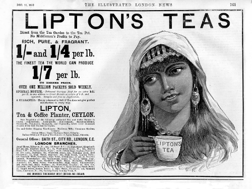Obviously we cannot take credit for India’s hard work but we did leave them the world’s largest railway, Westminster-style parliamentary democracy and the English language which they are using brilliantly to trade internationally, they are the winners.
The Commonwealth is the growing part of the world, the 21st century is their century. Why shut them out just to stay in a club of losers? Lets get stuck in and help the Commonwealth countries develop. The old masters can become the servants, lets not be too proud and have some humility.

The Empire was not a one way street, we learned a lot from the Commonwealth peoples. We got tea, carpets, colourful patterns and new artistic and musical forms, new philosophies and our national obsession with curry.
By being exposed to the world, the values of the British people started to change. We realised that people were not so different. We went into the world as gold-hungry pirates but started coming back with new values.
The Society for Effecting the Abolition of the Slave Trade started from those who had gone out into the Empire and not found blood thirsty savages, but instead found friends and lovers, decent human beings. To make sense of it they went back to the New Testament notion that God made all men are equal and all men are our brothers.
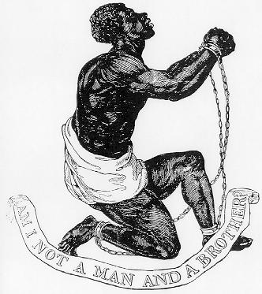This came to a head when the great Christian leader and parliamentarian William Wilberforce led the social and parliamentary campaign to abolish slavery.
Since everyone is our brother and sister, all men should be made free of slavery, oppression and poverty and it is our responsibility as human beings to make it happen, to bring freedom to the world. Not wait for the oppressed to take back their own freedom, it is everyone’s job, especially the advanced country that is Britain.
This sounds simple and obvious now, but in the late 1700s this was a radical idea, the first time it had been exposed.
It is an unavoidable historical fact that this was a British (and Dutch) movement. During this period, Germany and much of continental culture was going in a totally opposite direction, building the foundations of fascism.
I don’t say this for nationalistic reasons but to point out that human rights did not start because of the EU. We were already starting to take a first step down this path three hundred years ago.
Maybe this is why God brought the hammer down on Doggerland, to give us a more global perspective. Once you have built a boat to sail to Europe, you can use that same boat to explore the world, then you find that everyone is a human being.

The last patriot
American Independence is today framed as a fight for freedom, Mel Gibson being killed (again) by the evil English, and to a large extent that is accurate. However, what they don’t like to mention is that one of the factors driving American Independence was a fear among American slave owners that Britain was going wobbly on slavery. They were right, we were.
What is also true is that the newly independent America went backwards on the rights of Black people and native Americans for the first 50 to 75 years.
One thing that the British navy based in its territory in Canada liked to do was to go down to plantations in the American south and rescue slaves, many thousands of whom settled in Canada and in the UK.
We should have done more. We should have freed every last slave, even if it meant abolishing the US government and killing Mel Gibson a third time. All people are equal. Those who are oppressed we must help.
All Britons got free healthcare in 1948. If you are black in America today you are three times as likely to not have decent health insurance than a white person. America was 75 years behind us in 1800 and it is still 75 years behind now.
Therefore, this is not the time to import the US health care system via TTIP. Sadly, the EU has it on the cards and we cannot escape it while being a member. If you or your family has what the Americans call ‘pre-existing condition’, then expect significantly worse and more expensive healthcare than we have now.
I actually love Americans and American culture. I hate their war mongering governments. I love San Francisco and hate Washington DC.
We should have free trade with America, but at the moment the American government is only offering take or it leave it terms. I think we should leave it.
I also dislike the idea that to criticise the American government is a problem. I don’t want to live there. I don’t want UK to become America either. I don’t want their ideas about private healthcare, GMO foods, Fracking or a culture based on the ownership of guns.
Rome XP: World War I
When Napoleon tried to create a united Gallic Europe, we were going to lose our essential pit stop of Malta and possibly lose access through Mediterranean, as well as our allies being attacked.
So we popped over the channel and put Napoleon is his box but lost interest afterwards. As we saw above, we long ago lost interest in holding possessions on the mainland of the continent.
So after Napoleon, it was still France that was seen as the potential trouble maker. In general, in the 19th Century, Relations between Britain and Germany were very good. Back then Britain still believed it was a Germanic people, the Anglo-Saxons, and we had our recently imported German kings. All that was deliberately and rapidly washed away in the build up to World War II so it is quite hard to comprehend now.
Our main priority was always free trade routes, as long as we could go past Europe through the Mediterranean, we didn’t want to interfere in the continent and they didn’t want to interfere in our empire, we just wanted happy neighbours.
However, while we were sailing off around the world, causing chaos, building railways, drinking gin and rethinking what it was to be British and human. The Europeans were still trying to make the Roman empire. They couldn’t agree if it would be a French empire or a German one but now they had better guns which spiralled into World War I.
The Austrian Franz Ferdinand was assassinated by Serbia. The UK tried to make France and Germany just get along. They didn’t listen. Politicians and generals on both sides decided this was the perfect excuse to defeat the other and become the new Roman empire.
When German and France started fighting, we still tried to calm it all down. The problem was that Britain a had given security guarantee to Belgium in 1839, not sure the UK even remembered but the Belgians did. So when on the 4th August 1914, Germany troops marched through Belgium to attack France, the guarantee was triggered.
The British public was totally confused, weren’t we a Germanic people? Isn’t France the country of Napoleon? Aren’t France the bad guys? Why do we even care about Belgium anyway?
In the confusion of complex European politics, to the government honouring the deal with Belgium seemed like a precise and specific aim that didn’t require a master plan for the continent.
The government decided it could clear out Belgium and be back home in a week, back home in time for Christmas, back home in time for New year...
We went into World War I as a naval power with little recent experience of fighting warfare on land against an equally advanced enemy. Sea battles against an inferior foe last a day or two, maybe a couple of weeks.
The War dragged on for 4 long years and we lost a million of our best and brightest people for no gain whatsoever. Progressive social changes started going backwards. Long promised reforms and freedoms promised to Ireland were delayed by the war and we lost them. We bankrupted ourselves and started to lose the whole Empire. We even killed Mel Gibson again at the incompetently run campaign at Gallipoli.
France continued Empire building in the Treaty of Versailles, trying to guarantee a permanent superiority over Germany. The UK delegation, “the Heavenly Twins”, bankers who were brought in as “worthy finance experts”, despite advice from Keynes in the Treasury to prioritise making sure post-war Germany was viable and don’t worry about making money, decided it wanted a huge pile of money out of Germany too.
If only people today would learn to ignore bankers and ‘worthy’ figures of high finance and listen to Keynes, maybe we would not have the financial crash, the Greece crisis, or in fact World War II.
Rome 7 - World War II
Between the wars, America had started to make aggressive moves against Britain and its empire, so wasn’t even looking at Nazi Germany. If any threat loomed it was from those evil red communists in Russia.
Britain likewise hardly noticed, struggling to deal with colonial demands for independence.
When the first moves in Hitler’s game started, many assumed it was just a corrective to the Treaty of Versailles. Maybe partly it was, but Hitler had got the taste of momentum and was never going to stop.
Hitler, like those before, wanted his own version of a united Europe. Mussolini even used the Roman symbolism directly.
Hitler called Charles V’s Holy Roman Empire (see above) the First Reich. Bismarck’s Prussian Empire was the Second Reich, and Hitler’s own rise to power was the Third Reich, the third German attempt at a pan-European state (ignoring all the other attempts).
This time, it really could not be ignored. Hitler’s grand vision of a united Europe left no room for anyone else, whether internal minorities such as the Jews, or external powers such as Britain.
Germany was the master race, a white Europe united under one government with white troops wearing even whiter shirts.
Britain stood alone against Hitler!
Erm well no. Not really at all.
Forces that the UK fielded were a multi-racial bunch. As well as my Granddad and other British residents and thousands of Australians and Canadians, we had 2.5 million Indian volunteers, we had a Burma Division, a Fiji Infantry Regiment, the Royal Malay Regiment, the Arab Legion and Africa sent six whole divisions of black African volunteers. It goes on and on.
In the following image, comrades look on as a West African soldier is treated by doctors. Many thousand Africans and a million Indians died for our freedom.
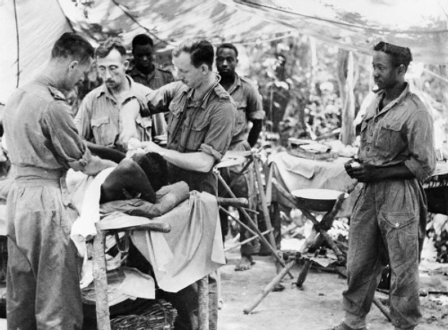Despite all the injustices, problems, disagreements, desires for independence, etc, when we needed them, the Commonwealth was there for us. We wouldn’t even have a UK if it was not for them.
Oh yeah and even the Americans came. Eventually. Thanks. We love you. God bless America.
The multi-racial international British Commonwealth and America beat the white European master race and their all-white allies because all people are equal, all are valid, and all have something to contribute. You don’t have to live in Europe to be valuable.
In 1972, the UK was still not yet in the EU so our borders will still largely open to the world, as they had been since the days of Queen Anne.
Independent Uganda decided to expel all 50,000 of its citizens from Indian origin. 27,200 of them settled in the UK. It wasn’t all easy, there was a lot of racism from the right and support from the real socialists, but they thrived here and like the Huguenots, they became an essential part of the UK population.
The Socialist worker at the time tried to explain to the British people they had nothing to fear:

It is the racist financial elite and the mainstream media that tries to people of Britain against our cousins in the Commonwealth, and they still do it today.
The Guardian is nice, it has a handy app that means I can read it on the toilet, but it is not a left-wing paper, it is a right-wing mainstream media paper like the rest. This is the age of the Internet, diversify your information.
Rome 10 - The European Union
A factor in the wars between France and Germany is that the bordering areas are rich in natural resources. Sharing them helps to prevent arguments which makes peace. In this context the post-war European Coal and Steel Community makes a lot of sense. But Britain has never dug the Ruhr. It doesn’t mean anything to us.
Brussels is the mid-point between France and Germany, good location for them but it doesn’t mean anything to UK except the site of some stupid unnecessary wars between France and Germany where our grandparents and great-grandparents suffered. We did not need to join the EU to stop us conquering France or Belgium. UK has been finished with that since 1534.
So the fact the symbolism of the EU means more to France and Germany and means little to UK, doesn’t come us much surprise.

The EU used to be like a benign attempt at a Roman Empire, but it has become increasingly hostile to its own people, see what happened in Greece, and it is increasingly out of step with British values, go read about TTIP. Read about the Viking Line labour dispute. The EU has long ceased to be a progressive force, if it ever was.

It has a centralised, proprietary setup where the only people that can influence decisions are yesterday’s multinational corporations. It then puts a phoney parliament on top as a democratic fig leaf. The European ‘Parliament’ has two fancy state of the art buildings that it shuttles between. What it cannot do is make any new laws or repeal any old ones. Only the unelected Commission can write new laws, as for repealing laws, there is not a system for that. What a joke!
In 1999, I was an undergraduate with a giant EU flag on the wall of my dorm. I read all the propaganda, went on all the trips. I wrote essays saying while the EU was currently undemocratic, bad for the environment, and bad for the developing world, it would be fixed soon. It wasn’t. All we had to do was co-operate and wait and it will reform. It didn’t.
I even waited in the Snow in 2002 outside the Bank of Finland to get some of the first Euros. What a mistake the Euro was, it has bankrupted Greece and left many of the young people of Europe without a hope of jobs.
Those who funded the Remain campaign are the same people that caused the financial crisis of 2008: Goldman Sachs, Merrill Lynch and J.P. Morgan. They are not our friends or allies.

Much is made to dismiss left arguments for exit because Nigel Farage wants exit. Whatever one may think of him, he has never held power to hurt anyone and never will have power. Meanwhile, Remain’s George Osborne has had power and used it to take money from disabled people and give it to the same billionaires that are backing remain.

Then we come to Remain’s Tony Blair.
Britain in recent history didn’t start wars or kill people, yay! We had finally learned from our past mistakes. That is until the lying warmonger Tony Blair came along.
My own faith in Britain took a massive nosedive then and probably hasn’t recovered, maybe it never will, it is now the cyber-internationale or nothing.
Blair is responsible for choosing to start a war which has killed up to a million people. I will not stand with him and I will probably not agree with him on anything. When you take the same side as Blair, I see you as a right-wing Blairite, I do have to admit that. You have to to, you are one. It is better to be honest that you are right of me.
I am not a European. I am British and I am a human and like Wilberforce, I believe being a human is the more important fact.
I don’t see the need for any layers in between.
I believe that a Kenyan or an Indian or an Australian or a native American is as equal to a Bulgarian or a Hungarian.
The EU means that someone 1000 miles east of me has equal rights to me in the UK but someone 1000 miles south of me has none. I find that completely arbitrary.
The real truth is that European countries are all white, that is the only unifying factor. That is a racist way to order the world.
There is a lot of middle-class European nationalism, as if it is an acceptable form of nationalism, and an acceptable form of racism. It is not. To me it just seems like the last 2000 years of re-making the Roman Empire.
Moving on from being a little Englander is not be a little European, it is to be a citizen of the whole world.
There is a lot of middle-class sneering at the out campaign, that it is full of racists and not the right kind of educated people in the Remain campaign. A racist with a degree is still a racist. The remain campaign is equally racist. Just one step zoomed out. They are still putting up trade and immigration barriers to everyone who is not in the arbitrary group of 28 majority-white countries that is the EU.
If you don’t have a degree, if you are a normal working person sick of the sneering; I have three degrees, you can imagine one of them is yours. They don’t mean anything here. Your voice is equal to the most loftiest expert. Stick to your beliefs. RMT, ASLEF, BFAWU and other Trade Unions supporting Leave know as much, if not more, than the forces of neo-liberal capitalism.
The fact is the Europeans don’t have the Commonwealth history and the relatively happy race relations we have in the UK. We have a different history. That is fine. Let them get on with their Rome building.
Britain can leave and rejoin our Commonwealth and the rest of the world. If Rome 10 still wants to trade with us afterwards, fine, if not fine. We have a massive balance of trade deficit with them anyway so not having a trade deal would both hurt and help us. For Rome 10, not having a trade deal would only hurt them.
Why do you think we have a massive balance of trade deficit with the EU in the first place?
If you remember, the Commonwealth is a group of ccountries whose citizens had stood up and died for us in the war. Before we joined the EU, we put had trade barriers with to the Commonwealth. We had a complementary relationship, we sold them cars and machines and they sold us food, carpets, clothes, tea and so on.
We used to eat cheap food grown without chemicals in the hot sun in Australia, Africa and India. Now we eat expensive pesticide covered fruit grown in heated greenhouses in the low countries. Next up with the EU’s TTIP, we are going to eat American GMO and hormone treated foods, God help us.
We turned on back on the Commonwealth to join a group of similar economies in Europe. We tried to out German the Germans and failed. Why would Germany need to buy our cars or advanced technology? It can make cars itself and often better.
Putting up trade barriers to complimentary countries was a mistake. We cannot all do the same thing. We cannot all do everything. We all live on one planet and we all do best if we all work together.
The Information Age
After the Scottish and English reformations, we had growing freedom of thought and expression, without which the technological and scientific discoveries of the industrial revolution would not be possible.
The machine, from a simple lever to a super computer, magnifies human activity. We have combine harvesters, medical equipment, airplanes. This magnification in productivity has the potential to bring food, health and wealth to every member of our species.
We also need to think about our planet and the other species we share it with.
In this informational age, the EU has nothing to offer, it just wants to bring in software patents so yesterday’s innovators can have monopoly rent. Where is the European Google? Why is all the innovation happening in America, India and China?
The Neo-liberal sweatshop agenda
So far the fruits of the industrial revolution, and now the information revolution, have not been shared very fairly.
There is this horrible propaganda: “immigrants do the jobs British people are not willing to do”.
Existing residents used to be happy picking vegetables, doing factory work, doing care work. These used to be fairly paid secure jobs. People doing these unskilled jobs could afford to buy a house and all the essentials of life.
They did not suddenly become work shy. What happened is that secure contracts were replaced with insecure agency work with serf-like conditions. Local people cannot afford to take them and still raise their families. If your family is abroad where the living costs are lower, then maybe you can make it work but you are still being exploited.
If it is not good enough for a British person, it is not good enough for an Eastern European. Building our economy on the exploitation of Eastern Europe is no more ethical than building an Empire on the backs of Africans and Indians.
This was a choice, none of this happen by accident, it was designed to happen, and the forces of neo-liberalism are becoming very rich because of it.
The stupid thing is that companies with well paid workers in safe conditions using machines, lose contracts to cowboys hiring mass numbers of workers in unstable situations, both here and abroad. It is a technological de-evolution.
Enter the Matrix
Progress goes backwards but it also goes forwards again. Even if temporarily a sweatshop is cheaper than a machine, we can make more productive machines. If an industrial process makes pollution, we can make cleaner machines.
The future of our species is not about providing low paid insecure work, it is about using technology to automate and make work productive enough that we can give everyone decent and fair conditions.
We need more automation, more machines, and yes more developers writing software to run it all.
In the Terminator movies, the real hero is not the gun toting Sarah Conner, it is Skynet. In the Matrix, the hero is Agent Smith.

I don’t want to make Rome, I want to make the Matrix. I want us to work with the whole world and help give them all food, clean water, healthcare, computers and freedom.
The real conservative forces of high finance, the same guys that run the mainstream media and control the EU, of course want to convince you to remain. For me, it is part of the problem, not the solution.
Maybe we don’t leave this EU this week, I hope we do but the polls are not looking good, people are accepting the Goldman Sach’s funded messages. David Cameron won two referendums already using his anti-progressive project fear. I can believe he can win this one too.
However, we will leave in the end, it is just a matter of time, and we will not be the only ones. Across Europe, people are waking up. We don’t need a centralised proprietary government in Brussels to work together across borders. People are coming up with new models for open source government and distributed co-operation. We have just got to pull the arrow of neo-liberalism out of our eyes.
A spectre is haunting Europe - the spectre of technological utopianism. The idea of socialism has existed for a long time, but only now are we finally getting to a technological level where it can become possible.
Lets make it happen.
| [1] | The realities of our economy is that I must write software in order to eat, therefore this discussion is not as polished as I may like but I thought I would get it out before the vote. |
| [2] | George R. R. Martin’s A Song of Ice and Fire series is based heavily on British History, in his version, the elf-like children of the forest bring down the “Hammer of the Waters”, splitting the known world into two, in a desperate attempt to stall the invading humans. |
The Case of the Pirate Gamepad

I made some software (which will be explained in a future post) and used my trusty Argos third-party PS3 style gamepad to control it.
On the way to open sourcing it, I thought I had better try it with a an official Sony PS3 gamepad, and I could always do with another gamepad for when playing computer with the sprog.
We play a lot of open source games like SuperTuxKart and Frogatto which are two of our favourites. To be honest we play almost every game made available through Debian’s Apt.
So not really thinking too heavily about it, I popped onto a leading auction website, typed in PS3 gamepad, saw that the first result cost less than £13 including postage, and just bought it and moved on. Total time spent was about a minute.
Later I thought it was a bit cheap but ignored the thought on the basis that the PS3 is ten years old and has been long replaced by the PS4. The controller that game was the one above. In the following box.

Initial impressions were that it was a little light and the D-pad was different than I remember. However, it is probably been 5 years since I touched an official PS3 gamepad and maybe they made production improvements to make it lighter or I didn’t really remember right.
However, as soon as I plugged it in, and typed dmesg, the controller itself confessed to its real identity.:
usb 4-2: new full-speed USB device number 24 using uhci_hcd
usb 4-2: New USB device found, idVendor=054c, idProduct=0268
usb 4-2: New USB device strings: Mfr=1, Product=2, SerialNumber=0
usb 4-2: Product: PS(R) Gamepad
usb 4-2: Manufacturer: Gasia Co.,Ltd
input: Gasia Co.,Ltd PS(R) Gamepad as /devices/pci0000:00/0000:00:1d.0/usb4/4-2/4-2:1.0/0003:054C:0268.0010/input/input41
sony 0003:054C:0268.0010: input,hiddev0,hidraw3: USB HID v1.11 Joystick [Gasia Co.,Ltd PS(R) Gamepad] on usb-0000:00:1d.0-2/input0
A Gasia Co.,Ltd PS(R) Gamepad, what is that you may ask? Well so did I. It should look like this:
usb 4-2: New USB device strings: Mfr=1, Product=2, SerialNumber=0
usb 4-2: Product: PLAYSTATION(R)3 Controller
usb 4-2: Manufacturer: Sony
sony 0003:054C:0268.0008: Fixing up Sony Sixaxis report descriptor
input: Sony PLAYSTATION(R)3 Controller as /devices/pci0000:00/0000:00:13.2/usb4/4-2/4-2:1.0/input/input18
sony 0003:054C:0268.0008: input,hiddev0,hidraw0: USB HID v1.11 Joystick [Sony PLAYSTATION(R)3 Controller] on usb-0000:00:13.2-2/input0
The controller was totally fake!
So it didn’t help me generalise my software. Also these controllers contain a Lithium battery so I am not comfortable putting this counterfeit device in my child’s hands. If they are so far beyond the legal system that they do not need to care about the trademarks of Sony, how much do they care about electrical safety? Or chemical safety?
So I emailed my findings to the seller and they gave me an immediate refund and didn’t need to send the controller back. A counterfeiter with great customer service! Bizarre.
It is amazing the level of detail they went to. It is itself an interesting cultural artefact; a Chinese made plastic product pretending to be a different Chinese made plastic product. It is interesting philosophical discussion about if you use the same design, make it in the same place and maybe even use the exact same parts, what does genuine actually mean?
And what the heck is the markup on the official Sony controller if another company can make an almost exact replica for a less than a third of the price?
It is shame that people feel the need to be dishonest. A third party PS3 controller does not need to hide its true nature. I love my Argos one which has some useful extra features.
Surely selling the controller as what it is would be simpler than having to sneak around and recreate accounts constantly on the auction site?
If the manufacturer had said, “this is a PS3 compatible gamepad and it is three times cheaper”, then it could find its own market. While you are at it, put in a higher capacity battery and better bluetooth aerial than Sony’s controller and win on both price and quality.
As for me, I bought an official wired Xbox 360 controller from Argos. I actually prefer the shape ergonomically and it is more reliably detected by Linux and is much cheaper than the PS3 gamepad.